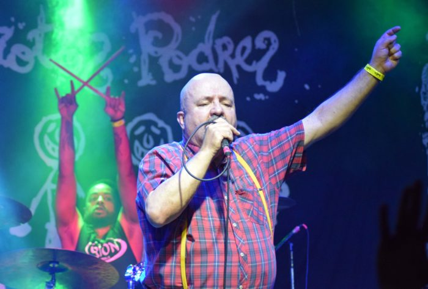
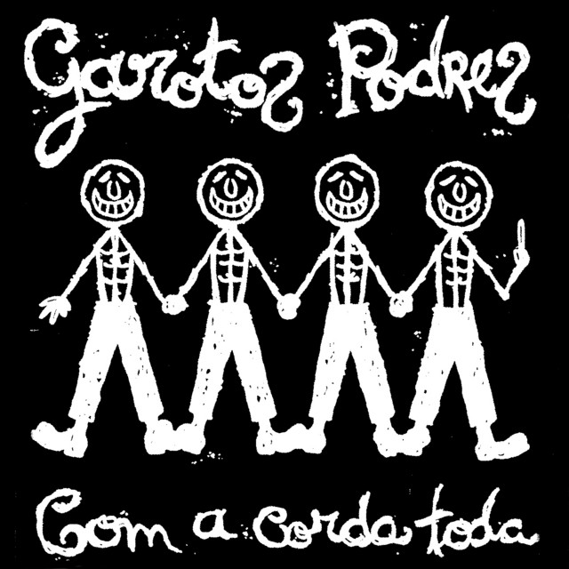
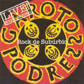
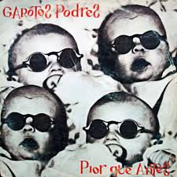
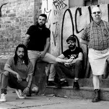

Início
A Banda
Discografia
Músicas
Vídeos
Turnês
Notícias
Galeria
Loja
Contato
Instagram: @garotospodresoficial
No site dedicado à banda, o público pode encontrar diversos conteúdos que ajudam a conhecer melhor sua trajetória.
No site oficial dos Garotos Podres, você encontra muito mais do que música — aqui é ponto de encontro de quem vive o punk de verdade. Desde sua formação, a banda marcou gerações com letras críticas, diretas e cheias de personalidade, sempre levantando questões sociais e políticas com irreverência e autenticidade. Neste espaço, você pode acompanhar a trajetória da banda, conhecer melhor cada fase da discografia e relembrar clássicos que continuam atuais até hoje. Também reunimos notícias, curiosidades, registros de shows e materiais exclusivos para quem acompanha essa história de perto. Mais do que fãs, somos parte de uma mesma cena. Então explore o site, aumente o volume e continue fazendo barulho com a gente.
Faça parte: acompanhe notícias, fotos exclusivas e conecte-se com outros fãs.


Álbum 1

Álbum 2

Álbum 3
